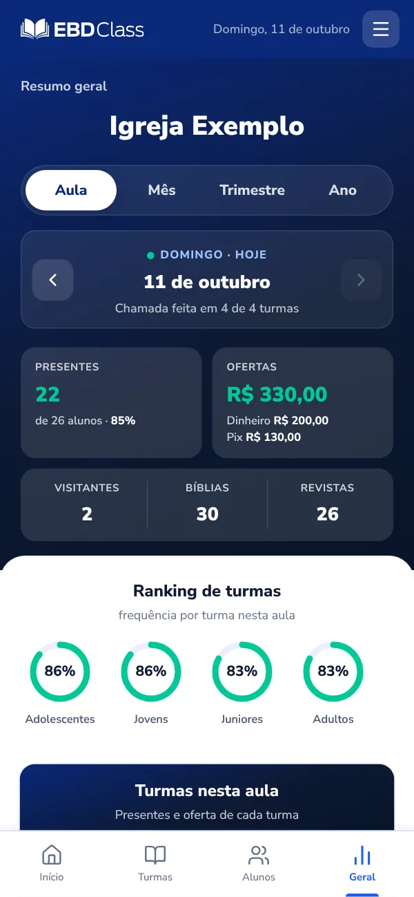
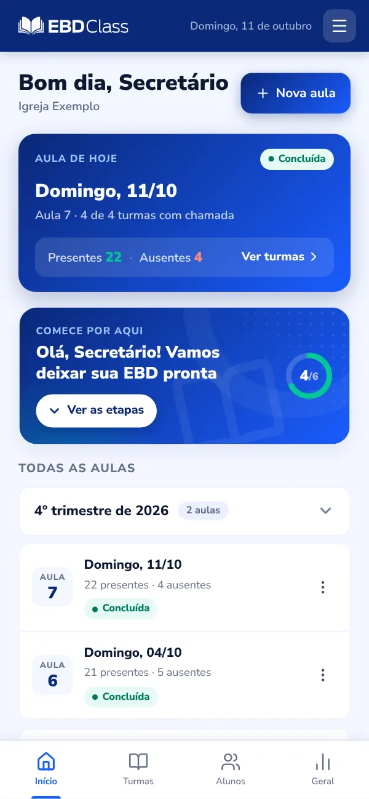
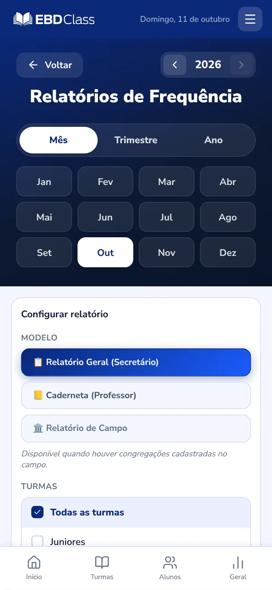

Quantos alunos vieram domingo? A resposta está no celular.
O professor marca P ou F na sala. A secretaria vê a frequência de cada turma, quem está faltando, as ofertas e o relatório do trimestre, tudo já somado.
A chamada é feita uma vez, na sala. Dali saem a frequência, o histórico, os alertas e os relatórios, sem ninguém passar nada a limpo.
Turmas e classes
Da classe das crianças à dos adultos, cada uma com seus alunos, professores e faixa etária. O app avisa quem já passou da idade da turma.
A ficha de cada aluno
Turma, telefone, aniversário e todas as presenças do aluno, para responder na hora "ele tem vindo?".
Frequência sem calculadora
Por turma e por aluno, com ranking de presença e o alerta de quem faltou três domingos seguidos.
Cada lição registrada
As aulas ficam guardadas por trimestre, com presentes, ausentes, Bíblias, revistas e visitantes.
Relatório para o pastor
Por aula, mês, trimestre ou ano, em PDF. Relatório geral, caderneta do professor e relatório de campo.
Acesso dos professores
Cada professor entra com o próprio usuário e vê só a turma dele. Os avisos da secretaria chegam no celular.
Ofertas, revistas e financeiro
Matriculados, frequência média, ofertas e o caixa da EBD, com o controle das revistas de cada turma.
Campo com congregações
A sede escolhe: o campo inteiro, só a sede ou uma congregação, sem precisar ligar para ninguém.
Aniversariantes a partir de 200 alunos; financeiro e revistas a partir de 500 alunos ou nos planos semestral e anual. No teste grátis, tudo fica liberado.
Gravação real
Sete alunos, P ou F, salvo em 10 segundos
O professor abre a turma, marca cada aluno e salva. Na mesma hora, a chamada aparece para a secretaria, junto com as outras turmas.
Gravação real do app: uma turma de 7 alunos da “Igreja Exemplo”, com nomes fictícios.
Presença, Bíblias, revistas, visitantes e ofertas na mesma tela
Sem sinal na sala? A chamada fica guardada e é enviada quando a internet volta. Abra o app com internet ao menos uma vez antes.
No navegador do celular ou no app para Android
Depois que o professor salva: o que a secretaria e o pastor veem
Para o secretário e a liderança
A tela Geral
Matriculados, frequência média e ofertas do período, com o ranking das turmas. Ninguém precisa conferir turma por turma.
Veja a aula do dia, o mês, o trimestre ou o ano
Ranking de turmas e de alunos com mais presenças
Alertas de ausência e aniversariantes da semana

Para o secretário
As aulas do trimestre
Cada aula com a data, os presentes e os ausentes. Aquela lição de agosto continua ali, sem procurar caderneta.
Crie várias aulas de uma vez, no dia da semana da sua EBD
Toque na aula para ver a chamada de cada turma
Marque a turma que ficou sem aula, para não contar como falta

Para o professor
A chamada da turma
Abra a turma, toque em “Todos presentes” e marque F só em quem faltou. Registre Bíblias e revistas e salve.
Presença, Bíblias e revistas na mesma tela
Espaço para visitantes, conversões e observações
O professor vê só a turma dele
Para a liderança
Relatórios sem somar nada
Escolha o mês, o trimestre ou o ano, as turmas e o modelo. O relatório sai em PDF, para imprimir e levar ao pastor.
Relatório geral (secretário) e caderneta (professor)
Relatório de campo, quando há congregações
Frequência por turma e por aluno

Para o secretário
Revistas: quem pagou, quem recebeu
Cadastre as revistas com o preço e inclua os pedidos por turma. Depois, é só marcar quem pagou e quem já recebeu.
Total, recebido, a receber e entregues do trimestre
Resumo por item para fazer a encomenda
Pagamentos direto no relatório financeiro
A partir de 500 alunos, ou nos planos semestral e anual. Liberado no teste grátis.
Quer ver essas telas com os nomes da sua turma? 15 dias grátis, sem cartão.
Antes e depois
O que sai da sua lista de domingo
Na cadernetaNo EBD Class
Na caderneta: Correr atrás da folha de chamada
No EBD Class: O professor marca no celular, até sem internetSalvou, a secretaria já vê.
Na caderneta: Somar caderneta por caderneta depois da aula
No EBD Class: A soma fica pronta antes de você sair da igrejaPresentes, ofertas, Bíblias e revistas do domingo.
Na caderneta: Perceber a falta quando o aluno já se afastou
No EBD Class: O alerta aparece no terceiro domingoAinda dá tempo de ligar e visitar.
Na caderneta: Refazer as contas do trimestre para o pastor
No EBD Class: O relatório sai em PDFPor mês, trimestre ou ano, para imprimir ou mandar.
Na caderneta: Procurar a presença de uma lição antiga
No EBD Class: A lição está lá, com a chamada de cada turmaSeparada por trimestre.
Na caderneta: Ninguém sabe ao certo quem pagou a revista
No EBD Class: Quem pagou e quem recebeu, marcadoOs pagamentos entram no financeiro da EBD.
Na caderneta: Ligar para cada congregação no fim do mês
No EBD Class: A sede vê as congregações quando quiserCom relatório de campo.
Quem usa
O professor marca, a secretaria acompanha, o pastor recebe
Secretário
Sai da igreja com a soma feita.
Cadastra turmas, alunos e professores
Acompanha as chamadas de todas as turmas
Tira os relatórios e controla as revistas
Superintendente
Sabe qual turma está esvaziando.
Frequência e ranking das turmas lado a lado
Quais turmas já fizeram a chamada
Histórico das aulas por trimestre
Professor
Marca P ou F e volta para a lição.
Vê só a própria turma
Funciona sem internet na sala
Vídeos curtos ensinam cada passo
Pastor e liderança
Recebe o relatório sem pedir duas vezes.
Frequência e alunos que estão se afastando
Ofertas do período
Relatórios em PDF para as reuniões
Campo com congregações
Vê cada congregação sem telefonar.
Cada congregação faz a sua chamada
A sede vê cada uma ou o campo inteiro
Relatório de campo em PDF
Teste grátis
Dois domingos para ver na sua igreja
São 15 dias com tudo liberado e sem cartão. Dá para montar as turmas hoje, fazer duas chamadas e levar o primeiro relatório ao pastor antes de decidir qualquer coisa.
O que está incluso no teste
Todos os recursos liberados
Sem limite de alunos durante o teste
Nenhum cartão de crédito pedido
Se não contratar, nada é cobrado e os dados ficam guardados
Ajuda pelo WhatsApp para montar as turmas
HojeCrie a conta em poucos minutos, cadastre as turmas e os alunos e dê o acesso aos professores.
1º domingoOs professores fazem a chamada pelo celular. Você acompanha as turmas no painel.
2º domingoCompare a frequência, veja quem faltou e tire o primeiro relatório em PDF.
Até o 15º diaEscolha o plano pelo tamanho da sua EBD. Ou não faça nada: nada é cobrado.
Precisa da aprovação do pastor ou da tesouraria?
Teste antes de pedir. Testar não custa nada e não compromete a igreja. No fim dos 15 dias, você leva para a conversa o relatório da sua própria EBD, com as turmas e as presenças reais.
Tudo o que está abaixo vale desde o primeiro dia do teste e está nos Termos e na Política de Privacidade.
Os dados são da sua igreja
Cada igreja só vê os próprios dados e o professor só vê a turma dele. Peça uma cópia ou a exclusão quando quiser. Política de Privacidade
Servidores no Brasil
Conexão criptografada e banco de dados em São Paulo, com tratamento de dados conforme a LGPD.
Sem fidelidade, sem multa
Cancele quando quiser e mantenha o acesso até o fim do período pago. Termos de uso
Ajuda dentro do app
Vídeos curtos em cada etapa e uma central de ajuda com as dúvidas mais comuns.
Uma pessoa do outro lado
Dúvida antes ou depois de começar? A equipe responde pelo WhatsApp.
Também na Google Play
No Android, instale o aplicativo oficial. No iPhone, adicione à tela inicial pelo Safari.
Preços
Quanto custa depois do teste
Nos 15 dias, nada. Depois, o preço vai pelo número de alunos da EBD, somando sede e congregações. Você escolhe o plano no fim do teste, já sabendo quantos alunos cadastrou.
Quantos alunos tem a sua EBD?
A partir deR$ 34,90por mês
Até 50 alunos: cerca de R$ 0,70 por aluno. No plano anual, R$ 29,08 por mês.
Valor por aluno com a faixa completa. Pagamento por Pix, boleto ou cartão. No semestral e no anual, o período é pago de uma vez, todos os recursos ficam liberados e há garantia de 30 dias: se não servir para a sua escola, devolvemos o valor.
Incluso em todos os planos
Turmas, alunos e professores sem limite de turmas
Chamada digital por turma, com Bíblias e revistas
Relatórios por aula, mês, trimestre e ano
Alertas de ausência e ranking de presença
Sede e congregações, com relatório de campo
Suporte por WhatsApp
Recursos por faixa
No mensal: aniversariantes a partir de 200 alunos; relatório financeiro e revistas e materiais a partir de 500 alunos.
No semestral e no anual, todos os recursos ficam liberados em qualquer faixa.
Só no anual: suporte prioritário, onboarding de 20 minutos com a equipe e preço garantido na renovação.
Mais de 2.000 alunos ou muitas congregações?
Montamos um plano personalizado para a realidade do seu campo.
Não. Comece com uma turma e alguns alunos e faça a primeira chamada. Depois, inclua as outras turmas com calma. Durante o teste não há limite de alunos.
Os professores vão conseguir usar?
A chamada é uma lista com os botões P e F para cada aluno, no celular. O professor não cria conta: recebe do secretário o usuário e a senha e já vê a turma dele.
O app tem vídeos curtos de cada passo e, se alguém travar, a equipe ajuda pelo WhatsApp.
Funciona sem internet na igreja?
Sim. Se faltar sinal na sala, a chamada fica guardada no celular e é enviada quando a internet voltar. Para isso, abra o app com internet ao menos uma vez antes.
Preciso instalar alguma coisa?
Não. O EBD Class funciona direto no navegador do celular ou do computador, com os mesmos dados nos dois. No Android, também há o aplicativo na Google Play. No iPhone, basta adicionar o EBD Class à tela inicial pelo Safari.
Serve para uma igreja pequena?
Sim. O preço vai pelo número de alunos da EBD. Até 50 alunos, o plano custa R$ 34,90 por mês, ou R$ 29,08 por mês no anual.
Preciso da autorização do pastor para testar?
Não. O teste não tem custo, não pede cartão e não compromete a igreja. Teste primeiro e, no fim dos 15 dias, leve o relatório da sua própria EBD para a conversa com o pastor ou a tesouraria.
O que acontece no fim dos 15 dias?
Se você não contratar, nada é cobrado e o acesso é pausado. As turmas, os alunos e as chamadas ficam guardados para quando a igreja assinar. Não pedimos cartão no teste.
Como funciona o cadastro?
Você informa o e-mail e confirma com um código que enviamos. Depois preenche seu nome e WhatsApp, escolhe usuário e senha e informa os dados e a cidade da igreja. Leva poucos minutos e não pede cartão de crédito.
Qual plano atende à minha realidade?
O plano vai pelo total de alunos da EBD, somando sede e congregações: até 50, 200, 500, 1.000 ou 2.000 alunos. Durante o teste não há limite, então você vê quantos alunos tem e escolhe a faixa depois. Acima de 2.000, temos o plano personalizado.
Não há fidelidade nem multa. Você cancela pelo próprio sistema (Configurações, Assinatura) ou pelo WhatsApp e mantém o acesso até o fim do período já pago. Não há reembolso proporcional. No semestral e no anual há garantia de 30 dias: se não servir para a sua escola, devolvemos o valor pago. Veja os Termos de uso.
Qual a diferença entre mensal, semestral e anual?
Mensal: preço cheio, renovado todo mês, com os recursos da faixa.
Semestral: 6 meses pagos de uma vez, com 10% de desconto e todos os recursos liberados em qualquer faixa.
Anual: 12 meses pelo preço de 10 (2 meses grátis), com todos os recursos, suporte prioritário, onboarding de 20 minutos com a equipe e preço garantido na renovação.
No semestral e no anual há garantia de 30 dias. Pague por Pix, boleto ou cartão.
O EBD Class controla as revistas da EBD?
Sim. O secretário cadastra o catálogo com o preço de cada revista e material, inclui os pedidos por turma com os alunos e professores já cadastrados e marca quem pagou e quem já recebeu. Os pagamentos entram no relatório financeiro.
O recurso está incluso a partir de 500 alunos ou nos planos semestral e anual, e liberado no teste grátis.
Posso ter várias congregações na mesma conta?
Sim. A sede cadastra as congregações e acompanha cada uma ou o campo inteiro, com relatório de campo. O limite do plano é a soma dos alunos de todo o campo.
Os dados da igreja ficam seguros?
A conexão é criptografada, os dados ficam em servidores no Brasil e cada igreja só enxerga os próprios dados. O tratamento segue a LGPD. Veja a Política de Privacidade.
O próximo domingo pode ser o primeiro sem caderneta
Crie a conta hoje, monte as turmas e veja a primeira chamada chegar à secretaria. Se não servir, é só não assinar.